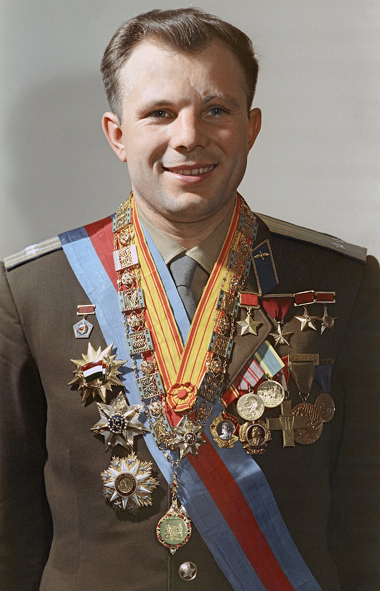

El ruso Yuri Gagarin, primer hombre en el espacio: dio la vuelta a la Tierra y volvió para contarla
A bordo de la nave Vostok, un mayor de la aviación soviética de 27 años, hijo de un carpintero de koljós, orbitó el planeta a más de trescientos kilómetros de altura y descendió en paracaídas sobre un campo del Volga, donde lo recibieron una campesina atónita y una vaca.

Radio Moscú interrumpió sus emisiones a media mañana con la voz de las grandes ocasiones, y por una vez el tono quedó corto: un ser humano ha salido de la Tierra y ha vuelto. El mayor Yuri Alexéyevich Gagarin despegó a las 9:07, hora de Moscú, desde las estepas del Kazajstán, a horcajadas de un cohete de treinta y ocho metros; su cápsula Vostok dio una vuelta completa al planeta en ciento ocho minutos y descendió en la región de Sarátov, donde el cosmonauta, que saltó en paracaídas según lo previsto, aterrizó ante una campesina y su nieta que no atinaban a huir del hombre anaranjado caído del cielo. «Soy de los suyos, soviético», las tranquilizó, «y vengo del espacio».
Desde allá arriba, donde ningún ojo humano había mirado, Gagarin transmitió con serenidad de manual —«la Tierra es azul», dijo, y la frase ya viaja por todas las agencias— mientras experimentaba en carne propia lo que los sabios apenas se atrevían a conjeturar: que se puede comer, ver, pensar y vivir sin peso, con el planeta entero rodando bajo las ventanillas. A su regreso lo esperaba el ascenso a mayor, el abrazo teatral del premier Jruschov y una gloria instantánea que ya desborda las fronteras del bloque: hasta los diarios de Occidente, que preferirían otra bandera en esta hazaña, rinden hoy sus titulares al piloto sonriente.
Del padre de la hazaña el mundo no conoce ni el nombre: la prensa soviética lo llama «el Diseñador Jefe», y su identidad es secreto de Estado, como casi todo en un programa que sin embargo lleva años dando señales: el Sputnik y su pitido en el 57, la perra Laika, las cápsulas con perros y maniquíes que venían ensayando el viaje de hoy. Al piloto se lo eligió entre veinte candidatos exprimidos en centrífugas y cámaras de silencio, y pesaron, dicen, tres cosas: su serenidad de manual, su estatura breve —la cabina no regala centímetros— y esa biografía de hijo de carpintero de aldea que parece escrita a propósito. Por las dudas, la nave voló sola: los mandos manuales iban bajo clave, en un sobre lacrado, no fuera que la mente humana desvariara allá arriba, donde nadie había estado para contarlo.
El parte de la mañana trae detalles que ya son folclore: el «¡Poyejali!» —«¡vamos!»— que gritó al despegar, más de arriero que de héroe; el lápiz que se le escapó flotando dentro de la cabina, primera pérdida material de la era espacial; y el descenso en un campo arado cerca del Volga, adonde después de la campesina llegaron los tractoristas de un koljós, dudando entre el abrazo y la desconfianza. Moscú no esperó desfile decretado: la gente salió sola a la calle, y la plaza Roja se llenó de abrazos como en el día de la victoria. Al mayor lo esperan ahora las capitales del mundo entero, y a su sonrisa, que las agencias ya llaman «la sonrisa de Gagarin», el destino de las banderas: flamear en todas partes.
Porque conviene decirlo sin vueltas: el golpe es también político, y en Washington duele. Es el segundo octubre de 1957, cuando el Sputnik; los rusos vuelven a llegar primero, y esta vez con un hombre adentro. El joven presidente Kennedy, se sabe, reunió de urgencia a sus consejeros espaciales para preguntar en qué terreno puede su país todavía ganar. Los entendidos apuestan: la Luna. Suena a fantasía, pero después de esta mañana la palabra fantasía habrá que usarla con más cuidado. Un hijo de carpintero ha visto amanecer desde afuera del mundo; lo imposible acaba de mudarse de dirección.